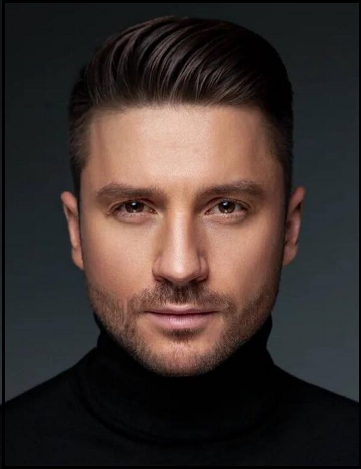

Серге́й Вячесла́вович Ла́зарев (род. 1 апреля 1983, Москва, РСФСР, СССР) — российский певец, актёр театра, кино и озвучивания, телеведущий. Бывший участник группы Smash!!. Дважды представлял Россию на международном песенном конкурсе «Евровидение» (в 2016 году в Стокгольме и в 2019 году в Тель-Авиве), заняв оба раза третье место. Лауреат премии «Золотой граммофон»; многократный участник, а с 2007 года — ведущий фестиваля «Песня года».

Родился 1 апреля 1983 года в Москве. С 4 лет занимался спортивной гимнастикой. Родители Вячеслав Юрьевич и Валентина Викторовна Лазаревы развелись, когда он был ещё маленьким. Развод произошёл по инициативе матери, Сергея с братом Павлом воспитывала мать, отец алименты не платил. Постепенно Лазарев прекратил посещение спортивных секций и продолжил занятия в различных детских музыкальных ансамблях. С 9 до 11 лет Сергей Лазарев пел в ансамбле имени Владимира Локтева вместе с братом Павлом. В это же время играл в театре Бориса Покровского. В 1995 году стал одним из участников детского ансамбля «Непоседы». В составе «Непосед» принимал участие в известных телевизионных программах и фестивалях. В том же году снялся в телевизионном юмористическом журнале «Ералаш».